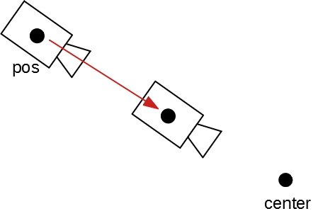
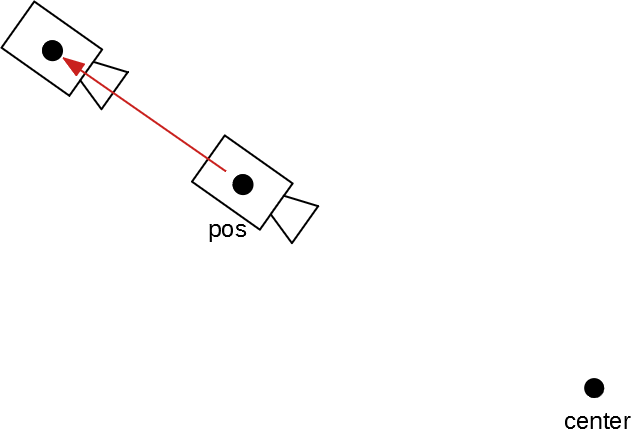
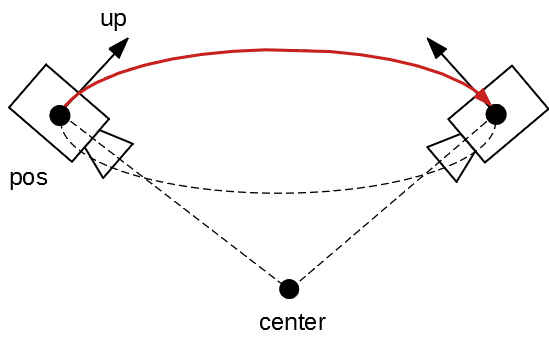

OpenGLのマウス操作の実装メモ
3D画面をマウス操作したときのカメラの動きの実装をメモ。
自分的にはいい感じに動いているが、もしかしたら間違いがあるかもしれない。
カメラは以下のようにした場合の実装のメモとなっている。
struct Camera
{
enum ZoomType
{
IN,
OUT,
};
glm::vec3 pos = glm::vec3(1, 1, 1); // 位置
glm::vec3 center = glm::vec3(0); // 注視点
glm::vec3 up = glm::vec3(0, 1, 0); // 上方向
glm::uvec2 size; // ウィンドウサイズ
void zoom(ZoomType type) noexcept;
void move(const glm::dvec2& mouse_pos0, const glm::dvec2& mouse_pos1) noexcept;
void revolution(const glm::dvec2& old_cursor_pos, const glm::dvec2& new_cursor_pos) noexcept
};
ズーム
ズームは、カメラの注視点(center) に向かってに カメラの位置(pos) を移動させるようにした。
ズームイン
ズームインは、カメラの位置(pos) が カメラの注視点(center) へ近づく

ズームアウト
ズームアウトは、カメラの位置(pos) が カメラの注視点(center) から離れる

実装
void Camera::zoom(ZoomType type) noexcept
{
auto d = 1.0f;
if(type == ZoomType::IN) d = -1.0f; // ズームインだと近づくのでマイナスにする
// 移動方向を求める
const auto dir = glm::normalize(pos - center);
// 新しい位置を求める
const auto mouse_pos1 = pos + dir * d;
// カメラがズームインできる最小値を設定. 0.3fは適当に設定
// ズームアウトは今回とくに制限を設けない
const float min_near = znear + 0.3f;
if(glm::distance(mouse_pos1, center) > min_near)
{
pos = mouse_pos1;
}
}
移動
カメラの移動は、カメラの位置(pos)と注視点(center)が共に移動するように実装する。
実装
void Camera::move(const glm::dvec2& mouse_pos0, const glm::dvec2& mouse_pos1) noexcept
{
const auto view = viewMatrix();
const auto proj = projectionMatrix();
const auto viewport = glm::vec4(0, 0, size.x, size.y);
// マウス座標をワールド座標に変換
const auto p0 = glm::unProject(
glm::vec3(mouse_pos0.x/2 - mouse_pos0.x, mouse_pos0.y - mouse_pos0.y/2, 0),
view, proj, viewport
);
const auto p1 = glm::unProject(
glm::vec3(mouse_pos1.x/2 - mouse_pos1.x, mouse_pos1.y - mouse_pos1.y/2, 0),
view, proj, viewport
);
// マウス移動した分をカメラの位置と注視点に追加
constexpr float SPEED = 30.0f;
const auto d = (p1 - p0) * (glm::distance(center, pos) * SPEED);
pos += d;
center += d;
}
回転
カメラの回転は、注視点(center)を中心とした球体に沿ってカメラが移動するようにする。
この時、カメラの位置(pos)と上方向(up)が変化する。
球面座標 で求められるらしい。
よくわかっていない。参考にしたサイトがあったがメモするのを忘れてしまった。

とりあえず、ソースコードを乗っける。
実装
void Camera::revolution(const glm::dvec2& mouse_pos0, const glm::dvec2& mouse_pos1) noexcept
{
constexpr auto SPEED = 10.0f;
const auto u = glm::normalize(up);
const auto w = glm::normalize(glm::cross(u, pos));
const float theta_u = (mouse_pos0.x - mouse_pos1.x) / SPEED;
auto q = glm::angleAxis(glm::radians(theta_u), u);
auto tmp_pos = q * pos * glm::conjugate(q);
const float theta_w = -(mouse_pos1.y - mouse_pos0.y) / SPEED;
q = glm::angleAxis(glm::radians(theta_w), w);
const auto p = glm::conjugate(q);
tmp_pos = q * tmp_pos * p;
pos = tmp_pos;
up = q * up * p;
}